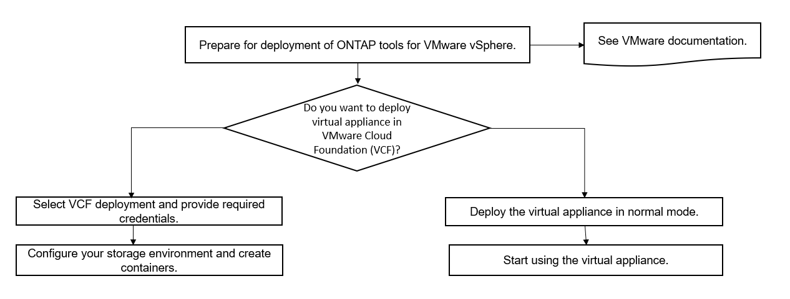

ONTAP 툴을 위한 VMware 클라우드 기반 구축 모드입니다
기여자
VMware vSphere용 ONTAP 툴은 VCF(VMware Cloud Foundation) 환경에 구축할 수 있습니다. VCF 구축의 주요 목적은 클라우드 설정에서 ONTAP 툴을 사용하고 vCenter Server 없이 컨테이너를 생성하는 것입니다.
VCF 모드를 사용하면 vCenter Server 없이도 스토리지에 대한 컨테이너를 생성할 수 있습니다. VASA Provider는 VCF 모드에서 ONTAP 도구를 배포한 후에 기본적으로 활성화됩니다. 구축이 완료되면 스토리지 시스템을 추가하고 REST API를 사용하여 컨테이너를 생성할 수 있습니다. API 호출을 인증하는 _appliance-api-token_을 생성하는 새로운 API가 도입되었습니다. 기존 API 중 일부는 _appliance-API-token_header를 포함하도록 수정되었습니다.
VCF 배포 모드에 사용할 수 있는 API는 다음과 같습니다.
API * |
* HTTP 메서드 * |
* 신규/수정 * |
* 섹션 머리글 * |
/1.0/관리자/컨테이너 |
가져오기 |
신규 |
컨테이너 |
/1.0/관리자/컨테이너 |
게시 |
신규 |
컨테이너 |
/1.0/vcf/사용자/로그인 |
게시 |
신규 |
사용자 인증 |
/1.0/관리자/스토리지 시스템 |
가져오기 |
수정됨 |
스토리지 시스템 |
/1.0/관리자/스토리지 시스템 |
게시 |
수정됨 |
스토리지 시스템 |
/2.0/스토리지/클러스터/검색 |
게시 |
수정됨 |
스토리지 시스템 |
/2.0/스토리지/용량 - 프로파일 |
가져오기 |
수정됨 |
스토리지 용량 프로필 |
/2.0/작업/{id} |
가져오기 |
수정됨 |
작업 |
VCF 배포 모드에서는 VVol 데이터스토어에 대해서만 작업할 수 있습니다. 컨테이너를 만들려면 VCF 배포를 위해 사용자 지정된 REST API를 사용해야 합니다. 구축이 완료된 후 Swagger 인터페이스에서 REST API에 액세스할 수 있습니다. VCF 모드에서 컨테이너를 생성하는 동안 스토리지 VM, 집계 및 볼륨의 이름을 제공해야 합니다. 이러한 리소스에 대한 ONTAP 툴 API가 업데이트되지 않으므로 ONTAP API를 사용하여 이러한 세부 정보를 확인해야 합니다.
* 스토리지 객체 * |
API * |
스토리지 VM |
API/svm/SVM |
집계 |
스토리지/애그리게이트 |
볼륨 |
스토리지/볼륨 |
컨테이너 생성 API를 실행하는 동안 컨테이너에 기존 볼륨을 추가할 수 있습니다. 하지만 기존 볼륨의 압축 및 중복제거 값이 컨테이너의 스토리지 기능과 일치하는지 확인해야 합니다. 값이 일치하지 않으면 가상 머신 생성이 실패합니다. 다음 표에는 해당 스토리지 용량 프로파일에 대해 기존 볼륨에 있어야 하는 값에 대한 세부 정보가 나와 있습니다.
* 컨테이너 저장소 기능 프로파일 * |
* 데이터 중복 제거 * |
* 압축 * |
플래티넘 |
둘 다 해당되며 |
둘 다 해당되며 |
AFF_Thick |
둘 다 해당되며 |
둘 다 해당되며 |
AFF_Default(기본값) |
둘 다 해당되며 |
둘 다 해당되며 |
AFF_계층화 |
둘 다 해당되며 |
둘 다 해당되며 |
AFF_암호화됨 |
둘 다 해당되며 |
둘 다 해당되며 |
AFF_Encrypted_Tiering을 참조하십시오 |
둘 다 해당되며 |
둘 다 해당되며 |
aff_encrypted_min50 |
둘 다 해당되며 |
둘 다 해당되며 |
FAS_Default를 선택합니다 |
배경 |
없음 |
FAS_Max20 |
배경 |
없음 |
브론즈 |
없음 |
없음 |
ONTAP 패치 API를 사용하여 적절한 값을 설정할 수 있습니다.
"https://<machine_IP>/api/storage/volumes/{uuid}`
ONTAP 도구의 VCF 배포에서는 컨테이너 생성 워크플로만 사용할 수 있습니다. 데이터 저장소 프로비저닝, 스토리지 기능 프로필 생성 또는 재해 복구 등의 다른 워크플로우를 사용하려면 Register.html 페이지를 사용하여 vCenter Server에 ONTAP 툴을 등록해야 합니다. VCF 모드에서 ONTAP 도구의 제한 사항은 재해 복구를 위해 SRA를 구성할 수 없다는 것입니다.

 문서 변경 요청
문서 변경 요청 이 페이지 편집
이 페이지 편집 기여하는 방법 자세히 알아보기
기여하는 방법 자세히 알아보기